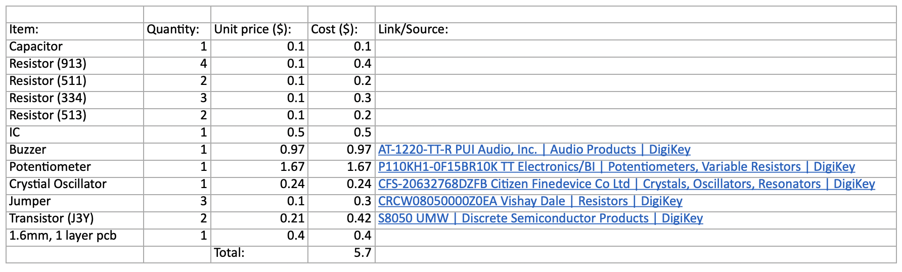

Dissection Report
Embedded Systems ECE 6724
Mississippi State University
Joshua Moore

- Introduction
- Mainstays Digital Kitchen Timer Magnetic Countdown Count up Timer with Large LCD Display
- Private label brands, like Mainstays, are products that are sold under the retailer's own brand name rather than the name of the manufacturer. These brands are often developed by or for the retailer to offer consumers more affordable alternatives to national or name brands. Private label products can be found in various categories, including food, clothing, electronics, and home goods. Walmart, being one of the largest retail chains in the world, has a history of offering private label brands to its customers. These brands are typically designed to provide consumers with quality products at competitive prices. They work with manufacturers and suppliers to produce goods under their private label brands, and these products are then sold exclusively in Walmart stores or online.
- In a New York Times article from 2003, a Wal-Mart spokeswoman, Melissa Berryhill, said the Mainstays label was trademarked for storage bins in 1996 and had broadened to new items every year. ''Now it's trademarked for all categories,'' she said, ''like office supplies, outdoor furniture and ironing board covers.''
- Personal Introduction: My name is Joshua Moore. I am a PhD student in Electrical and Computer Engineering involved in research of NextG Wireless Communications with a focus on ORAN, Ran Management and Orchestration, and Artificial Intelligence.
- Background and motivation for choosing the product: Dissecting a kitchen timer provides an opportunity to intimately understand the construction of an embedded systems device. By examining its components and their interplay, one gains practical insights into digital electronics, enhancing knowledge of timekeeping mechanisms and fostering a deeper appreciation for everyday technology.
- Product Market and Retail Information
- Product History: Introduced in the Mainstays line for the retailer Walmart in 2023
- MSRP and street prices: $15.00 with street prices ~$5.00
- Retail Outlets: Walmart
- Rebranded/OEM versions: None
- Dissection Photo Journal
-
Front view in packaging
 Back view in packaging
Back view in packaging Device offDevice onback of devicebattery compartmentback removedTime adjust mechanismtime adjust mechanismback of boardfront of boarddisplaydisplay working dissasembled
Device offDevice onback of devicebattery compartmentback removedTime adjust mechanismtime adjust mechanismback of boardfront of boarddisplaydisplay working dissasembled - Product Operation
- Human-machine interfaces:
- 1. A seven-segment display that visually represents the current count
- 2. An outer ring enabling the users to configure their desired time by rotating the ring clockwise to go up and counter clockwise to go down in time.
- 3. Centrally located start/stop button that initiates or halts the count, regardless of whether the count is incrementing or decrementing. This button also changes the function of the timer to count down or up by holding down the button.
- 4. Speaker alarming the user when the timer has expired.
- Usage timing diagrams:
- Product Analysis
- High-level product design diagram:
- Detailed design block diagrams for electronic systems:
- Waveforms and battery lifetime:
- Complete component level schematics:
- Complete eletrical BoM (including component costs breakdown): 
- Thorough non-electrical BoM (including materieral costs breakdown):
- Product Reassembly:
-
- Lessons Learned:
- Dissecting an embedded device, which included components like an oscillator, buzzer, LCD, and MCU, yielded a rich array of insights. Firstly, the examination of the oscillator shed light on its critical role in providing precise timing for the device's functions. The buzzer's dissection revealed its intricate circuitry for generating sound signals, showcasing the nuances of audio output mechanisms. Delving into the LCD module underscored the complexity of visual display technologies, offering insights into pixel arrangements and control mechanisms. The examination of the MCU provided a deeper understanding of the device's brain, emphasizing its processing capabilities and the interconnectedness with other components. Each component's dissection, therefore, provided targeted lessons on their functionalities, contributing to a nuanced comprehension of the embedded system's intricate architecture. This hands-on experience not only enhanced technical knowledge but also underscored the importance of a comprehensive understanding of individual components for a holistic grasp of embedded systems.